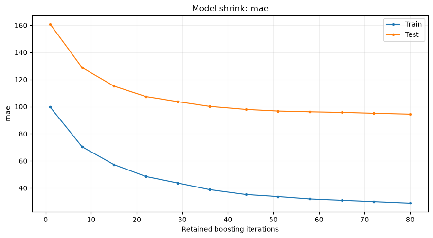

Model evaluation and shrink curves¶
Use model_evaluators for reports that need the fitted adapter and the task's
metric callback. ShrinkCurve shows how those metrics change when retaining
fewer boosting iterations. It evaluates prefixes of the existing ensemble;
the original model and training results stay unchanged.
Add a shrink report to training¶
This example uses the prepared UCI Bike Sharing data and the same weighted MAE
for training and the shrink report. Cache the source first with
python -m examples.prepare_data --dataset bike; recipes never download it.
from examples.custom_metric import weighted_mae
from examples.training_setup import prepare_training
from ml_toolkit import train_model
from ml_toolkit.model_evaluation import ShrinkCurve
from ml_toolkit.models import CatBoostRegressionModel
from ml_toolkit.training import Holdout
data, params, config = prepare_training()
result = train_model(
splitter=Holdout(data, test_size="2012-01-01"),
params=params,
model_factory=CatBoostRegressionModel,
metric=weighted_mae,
run_name="bike-shrink",
config=config,
model_evaluators=[ShrinkCurve(max_points=12)],
)
assert result.test_metrics is not None
Each enabled fit exports shrink/metrics.parquet and one indexed figure per
metric, such as shrink/000_mae.png. All scores returned by the task callback
are included, with separate curves for train and validation or test. Final
fits without held-out rows produce train-only curves. Undefined metric values
are null in the table and gaps in the figures. Prediction and metric errors
propagate with evaluator, iteration, and training-stage context.
Choose how many sizes to evaluate¶
| Setting | Retained iteration counts |
|---|---|
ShrinkCurve() |
Up to 50 evenly spaced integer sizes, including 1 and the fitted size |
ShrinkCurve(max_points=20) |
Up to 20 evenly spaced sizes, with the same endpoints |
ShrinkCurve(step=100) |
1, multiples of 100, and the fitted size |
ShrinkCurve(step=1) |
Every fitted size |
ShrinkCurve(sizes=(10, 50, 200)) |
Those sizes, sorted, plus the fitted size |
Specify at most one sampling option. max_points is at least two; a model with
one iteration produces one point. Explicit sizes must be unique positive
integers within the actual fitted size, which may be smaller than the requested
training budget after early stopping. Fixed steps adapt to that fitted size.
Sizes count boosting iterations. They equal tree counts for the bundled single-tree-per-iteration models. The original fitted size always appears, so its curve values can be compared with the ordinary training metrics. A reduced copy is held only while its scores are calculated; up to 50 points still require up to 50 prediction passes per sample, so use a coarser grid for expensive data.
Calculate and plot directly¶
The standalone example fits 80 iterations on 2011 hours and evaluates prefixes on both 2011 and the untouched 2012 hours. It shares the original pool and split labels with the existing evaluation examples.
from pathlib import Path
from examples.evaluation_data import fit_bike_evaluation
from ml_toolkit.plots.model_evaluation import shrink_curve
example = fit_bike_evaluation()
output = Path("plots")
output.mkdir(exist_ok=True)
report = ShrinkCurve(max_points=12)
table = report.calculate(
model=example.model,
metric=weighted_mae,
data=example.data,
split=example.split,
)
table.write_parquet(output / "shrink-metrics.parquet")
shrink_curve(table, metric="mae", save_fig=output / "shrink-mae.png")
assert table.height == 24
assert table["n_iterations"].max() == example.model.n_iterations == 80
smaller_model = example.model.shrink(20)
assert smaller_model.n_iterations == 20
assert example.model.n_iterations == 80

The horizontal axis is the retained iteration count and the vertical axis is MAE in rentals per hour. Compare the held-out curve with the train curve to judge whether additional iterations help on these data. The report does not choose a model size or reselect a classification threshold.
calculate returns a Polars table with n_iterations (Int64), split (String),
metric (String), and nullable value (Float64). Held-out-only and train-only
inputs work too. Splits must align with the pool and may contain train plus
at most one of val or test. Predictions use the adapter's original target
units and each split's row weights.
Optional model capability¶
All bundled CatBoost adapters support n_iterations and shrink(k), including
PU classification, log-link/Gamma regression, and inflation-adjusted models.
LightGBMServingModel supports these operations and predict_pool for direct
evaluation; it remains a serving adapter without a training interface.
shrink(k) returns an independent fitted copy retaining the first k
iterations. It preserves fitted baselines, prediction transformations,
classification thresholds, and inflation state. Reduced copies clear stale
validation F1, return None when the historical best iteration was removed,
and use the retained size as their refit budget. These settings survive model
serialization. A subsequent fit resets the retained-size override.
Custom adapters may implement the structural ShrinkableModel protocol without
inheriting from it. Keep all fitted preprocessing and inverse transformations
in the returned adapter, and validate k as an integer from 1 through the
current size. The existing Model contract does not require this capability.
An enabled ShrinkCurve raises TypeError with implementation guidance when
it is missing; disabling the report does not inspect model capabilities.
Build another model evaluator¶
Subclass ModelEvaluator and override either method as needed. evaluate
receives keyword arguments model, metric, data, and split, and returns
additional finite scalar metrics. write_artifacts receives those same inputs
plus artifact_dir and figure, and returns only the files to upload.
parameters() describes JSON-compatible settings. Instances retain settings
only and may be reused across folds.
Pass one evaluator, a list, None, or []. Reports run after prediction
evaluators and before data analyzers, under the same ReportingConfig stage
switches. Names must be unique across all report lists and enabled PSI/SHAP.
Settings are saved in configuration/model_evaluators.json. Additional scalar
scores and artifacts use the evaluator's namespace and do not enter training
results, CV averages, or tuning objectives. Shared figure settings and artifact
path checks match the prediction evaluation contract.
API reference¶
ModelEvaluator
dataclass
¶
ModelEvaluator(*, name: str)
Named model report with optional scalar metrics and selected artifacts.
Both methods receive the fitted adapter, the training metric callback and aligned data/split labels. Do not mutate inputs or retain fitted state: evaluator instances are reused across folds. Scalar results are additional reports, never training objectives or validation averages. Only returned artifact paths inside artifact_dir are uploaded beneath name/.
evaluate ¶
evaluate(
*,
model: Model | ShrinkableModel,
metric: Metric,
data: Pool,
split: Series
) -> dict[str, float]
Return finite additional scalar scores, or {} to omit them.
write_artifacts ¶
write_artifacts(
*,
model: Model | ShrinkableModel,
metric: Metric,
data: Pool,
split: Series,
artifact_dir: Path,
figure: FigureConfig
) -> list[Path]
Write report files and return relative or contained absolute paths.
parameters ¶
parameters() -> dict[str, object]
Return JSON-compatible settings, excluding fitted state.
ShrinkCurve
dataclass
¶
ShrinkCurve(
*,
name: str = "shrink",
max_points: int | None = None,
step: int | None = None,
sizes: tuple[int, ...] | None = None
)
Bases: ModelEvaluator
Plot task metrics against the retained boosting iteration count.
Parameters:
| Name | Type | Description | Default |
|---|---|---|---|
name
|
str
|
Report name and artifact namespace. |
'shrink'
|
max_points
|
int or None
|
At least two evenly spaced sizes, including one and the fitted size. None uses up to 50 points when no sampling option is supplied. |
None
|
step
|
int or None
|
Positive interval: evaluate one, step multiples, and the fitted size. |
None
|
sizes
|
tuple of int or None
|
Nonempty, unique positive sizes. The fitted size is always included. Sizes must not exceed the actual fitted size, including early stopping. |
None
|
Notes
Supply at most one sampling option. Models need the optional ShrinkableModel capability. Reduced adapters preserve task prediction transformations and never refit or change the original model. Every score from metric is evaluated per supplied split using row weights. Undefined scores become null values and gaps in plots; exceptions propagate. write_artifacts calculates once, saving metrics.parquet and one figure per metric. evaluate returns no scalar scores. No model size is selected.
calculate ¶
calculate(
*,
model: Model | ShrinkableModel,
metric: Metric,
data: Pool,
split: Series
) -> pl.DataFrame
Return n_iterations, split, metric and nullable value in a long table.
Inputs may contain train only, held-out only, or train plus one of val and test. Model capability and requested sizes are checked before any reduced predictions. Retain no fitted models or prediction history.
ShrinkableModel ¶
Bases: Protocol
Optional fitted prediction adapter supporting independent prefix copies.
Sizes count boosting iterations, starting at one, rather than zero-based best-iteration indices. Implementing this protocol does not require fit/log.
n_iterations
property
¶
n_iterations: int
Return the number of iterations used by ordinary predictions.
shrink ¶
shrink(n_iterations: int) -> Self
Return an independent adapter retaining the first n_iterations.
Reject non-integers and sizes outside [1, n_iterations]. The original adapter, its fitted state and predictions must remain unchanged.
predict_pool ¶
predict_pool(data: Pool) -> FloatArray
Return task-scale predictions, including fitted transformations.
shrink_curve ¶
shrink_curve(
table: DataFrame,
*,
metric: str,
save_fig: str | Path,
figure: FigureConfig | None = None
) -> None
Save one metric against retained iterations, with a line per split.
table is the long table returned by ShrinkCurve.calculate. Null metric values leave gaps. Uses natural metric units without assuming a preferred direction. The destination's parents are created and figures always close.